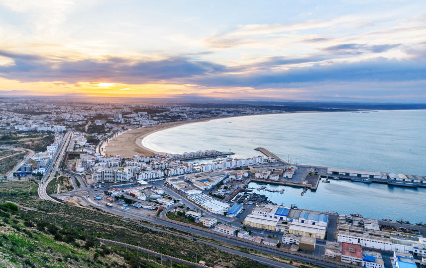
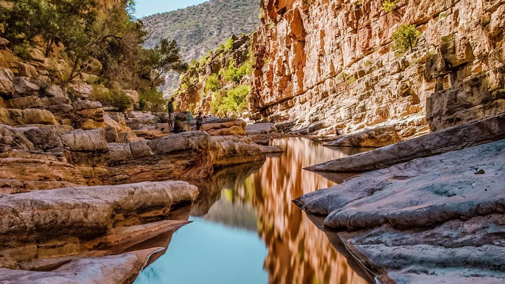
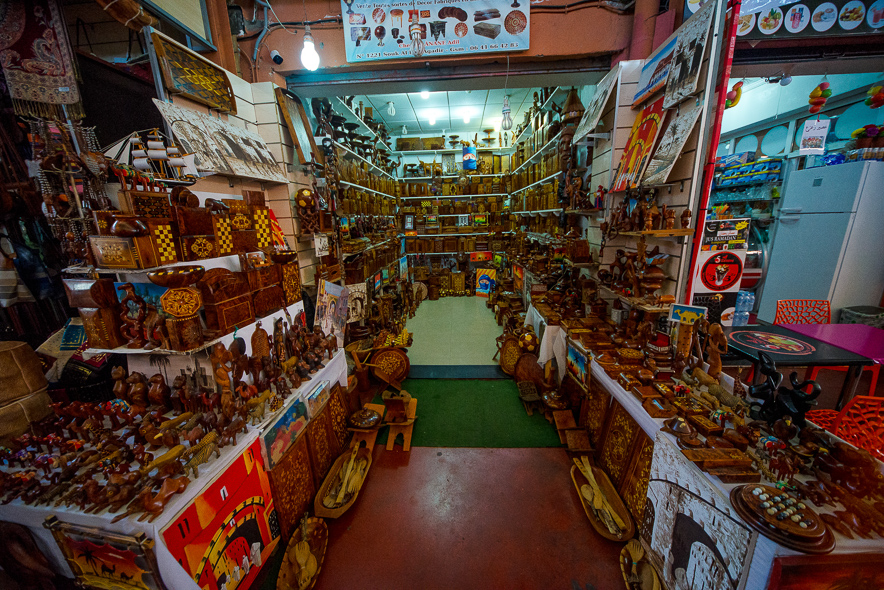
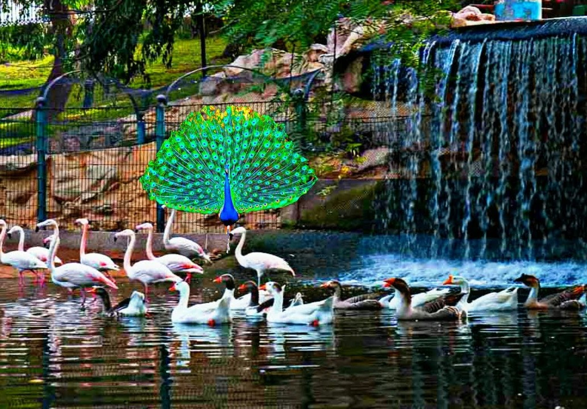
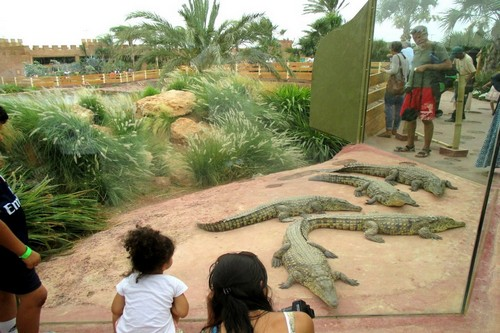

AGADIR
|
Envie de découvrir Agadir ? Il y a mille et une façons de le vivre. De la beauté à lumière face à l'océan, bordé par d’immenses plages d’environ 10 km.Ici, la douceur est celle du sable fin, de la caresse du soleil, on vie le paradis toute l'année à 3 heures des principales villes européennes. Agadir est une petite ville Amazighe du sud-ouest marocain, située sur la côte atlantique, dans la région du Souss, à 508 km au sud de Casablanca, à 173 km d'Essaouira et à 235 km à l'ouest de Marrakech.Avec 900 000 habitants en 2012, dans un site magnifique et sous un climat idyllique propre à vous faire oublier tous vos soucis. Longée par des boulevards bordés de palmiers et ses bars sur le front de mer. Agadir, la première station balnéaire du Maroc, possède une atmosphère décidément très occidentale.Agadir est aussi le premier pôle touristique du pays, place parfois disputée par Marrakech, et le premier port de pêche du Maroc. L’activité commerciale y est également en plein essor avec l’exportation d’agrumes et de légumes produits dans la fertile vallée du Souss. Son climat exceptionnel, plus de 300 jours de soleil par an, et sa longue plage de 10 km, plus abritée que de nombreuses plages de la côte atlantique. |
 | |
|  |
C'est désormais la plus grande station balnéaire du Maroc où les touristes et les résidents étrangers viennent nombreux, attirés par un climat doux tout au long de l'année.Connue par ses immeubles blancs cachés derrière les dunes, ses larges boulevards fleuris, ses hôtels modernes et ses cafés de style européen, Agadir n'est plus une ville typique du Maroc traditionnel, mais c'est une cité moderne, active et dynamique, résolument tournée vers l'avenir.À partir de 1610, Rabat reçut une forte population de réfugiés morisques chassés de l'ancienne Al-Andalus par le roi d'Espagne Philippe III, qui s’établirent dans la kasbah et à l'intérieur de l'enceinte almohade25, dans la partie nord-ouest qu'ils délimitèrent et protégèrent par une nouvelle enceinte, la "muraille andalouse". Les descendants de ces Morisques, qui portent souvent des patronymes hispaniques tels que Guédira, Mouline (Molina), Bargach (Vargas), Karrakchou (Carracso/Carrasco), Moreno, Balafrej (Palafres), Ronda, Tamourro (Chamorro), etc., sont toujours considérés comme les Rbatis dits « de souche ». |
|
|
Pendant quelques dizaines d’années, Rabat, alors connue de l’Europe sous le nom de Salé-le-Neuf, fut le siège d'une cité-État, la République du Bouregreg, jusqu’à l’avènement des Alaouites qui s’emparèrent de l’estuaire en 1666. Sa principale activité était la course en mer contre les chrétiens, notamment contre les Espagnols, qui lui procurait la totalité de ses ressources, et la république salétine devint ainsi un des principaux centres de la course barbaresque en Afrique du Nord, en concurrence avec les Ottomans qui dominaient Alger, Tunis et Tripoli. Les corsaires de Salé-le-Neuf s'aventuraient très loin dans l'océan Atlantique, parfois jusqu'en Islande et jusqu'à Terre-Neuve, au large de l'actuel Canada26.C’est le plus beau site d’Agadir, la citadelle domine l’océan et la ville du haut de ses 236 mètres, elle fut érigée par Mohammed Ech-Cheikh (Fondateur de la Dynastie Sâadienne) en 1540 pour mener le siège de la ville, puis pour se protéger des attaques portugaises. La place fut renforcée deux siècles plus tard, en 1752, par Moulay Abdallah qui y installa une garnison de deux mille hommes. Après le séisme, seuls subsistent les pans du mur de rempart, partiellement raccommodé, et la porte d’entrée sur laquelle une inscription en hollandais "Crains Dieu et respecte le roi" rappelle que les Pays-Bas y installèrent un comptoir en 1746 sous la souveraineté du Sultan Sâadien. Ce site est un endroit idéal pour admirer le coucher de soleil sur la baie. |
 | |
|  |
La Kasbah ou Casbah d'Agadir (Dénommée Agadir Oufella en tachelhit, c'est-à-dire Agadir-d'en-Haut) est le site le plus majestueux de la ville. Il s'agit d'une forteresse surplombant la ville ainsi que la plage et culminant à une hauteur de 236 mètres. Elle domine l'océan à plus de 216 m sur les hauteurs d'Oufella, offrant un magnifique panorama sur la ville, la baie et l'arrière-pays. Agadir Oufella fut érigée en 1540 par Mohammed Ech-Cheikh, roi marocain appartenant à la dynastie Sâadienne. Après avoir conquit la ville, ce dernier construit ces murailles dans le but de se protéger d'éventuelles invasions notamment portugaises.Le site fut rebâtit en 1752 afin d'augmenter la sécurité d'Agadir. Après le tremblement de terre de 1960, les fortifications furent reconstruites sur leurs anciennes marques et seule la porte d'entrée fut conservée à l'authentique.Lors de leur promenade, les visiteurs n'oublieront pas que cette forteresse a renfermé le plus vieux quartier d'Agadir, à l'époque composé de petites ruelles et de résidents enjoués. Ses remparts et la porte d'entrée ont été restaurés tandis que les restes de cette ancienne place forte ont été transformés en nécropole. On y accède par une route offrant un magnifique panorama. |
|
|
L'endroit est idéal pour admirer la ville sous tous ses angles ainsi que les couchers de soleil!Situé à Agadir, le musée du Patrimoine Amazighe est dédié à la mémoire du patrimoine berbère de la région Souss Massa. C’est un petit bâtiment ocre et blanc, qui abrite ce musée du Patrimoine amazighe. Outre les nombreuses expositions temporaires, ce musée municipal rassemble des bijoux artisanaux et objets ethniques, réunies par Bert Flint, et la collection ainsi dévoilée tend à souligner la spécificité de cette culture berbère, et plus précisément la culture amazighe.Plusieurs expositions d'art contemporain temporaires y sont organisées en plus des visites guidées qui vous permettront de découvrir plus de 200 pièces anciennes réalisées à la main, telles que des bracelets en argent ou en maillechort, des fibules, des boucles d'oreille berbères et des colliers traditionnels de la région du Souss-Massa. Le musée ne se contente pas de ces vêtements d’apparat ou de ces bijoux uniques, il vous propose une exposition de tapis berbères et de tapis boucherouites, dont le ton orangé est caractéristique de la culture amazighe. |
 | |